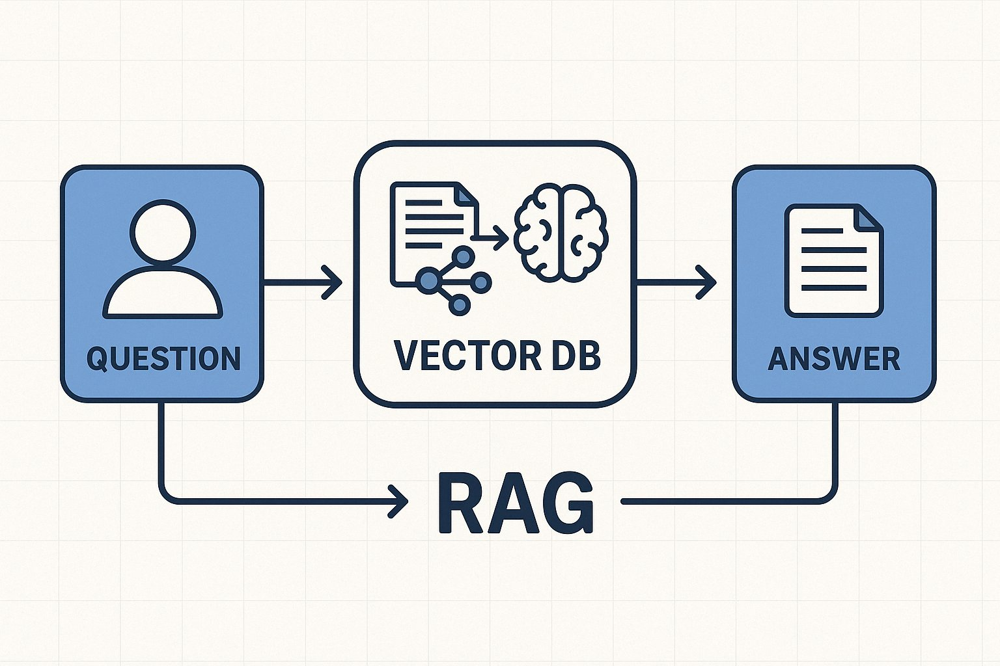
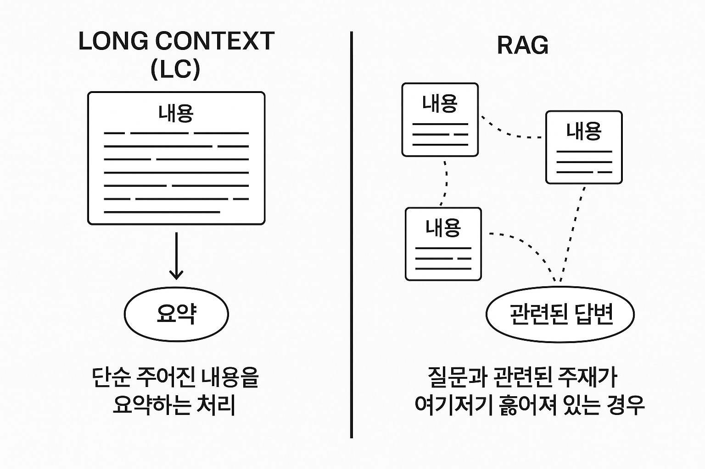
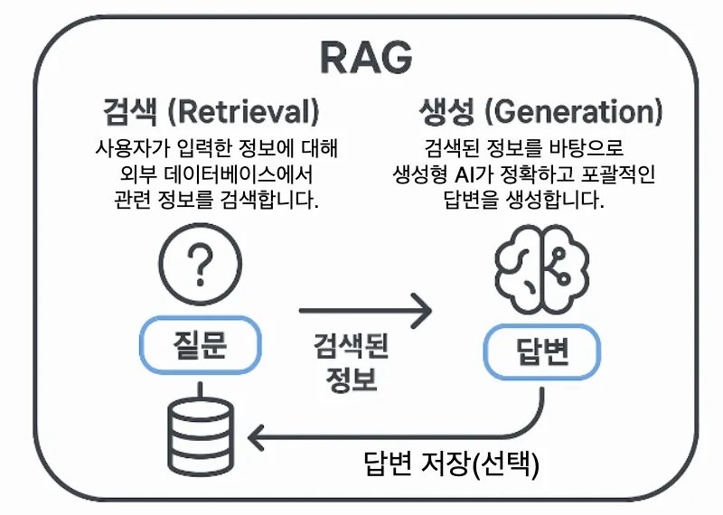
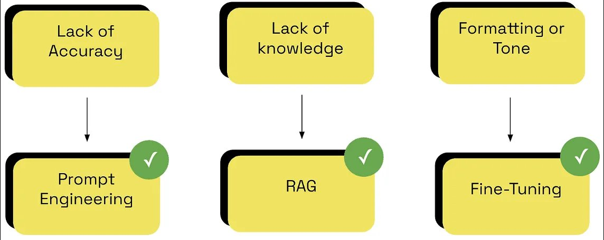

// AI TECHNOLOGY · 2025
검색 기반 증강 생성 기술의 이해
2025-09-23
RAG(Retrieval-Augmented Generation)은 대규모 언어 모델(LLM)의 한계를 극복하기 위해 등장한 혁신적인 기술입니다. 외부 지식 소스에서 관련 정보를 검색하여 LLM의 답변 생성 과정을 보강합니다.

LLM의 한계점
학습 데이터 이후로 생성된 정보에 접근할 수 없습니다.
사실이 아닌 정보를 생성하거나 존재하지 않는 사실을 진술합니다.
특정 분야의 전문 용어나 지식에 제한적입니다.
RAG의 해결 방안
검색기(Retriever)와 생성기(Generator)의 두 단계로 구성되어 외부 지식 소스에서 관련 정보를 검색, LLM의 답변 생성 과정을 보강합니다.
외부 지식 소스에서 관련 정보 검색
검색된 정보로 LLM 답변 생성 보강

LC vs RAG 비교

검색 + 생성
DPR(Dense Passage Retrieval) 기술로 검색 정확도 향상
LLM이 컨텍스트 내 정보를 활용하여 답변의 정확성과 사실성을 높입니다
검색기는 RAG 시스템의 첫 번째 단계로, 사용자의 질문과 관련된 정보를 외부 지식 소스에서 찾아내는 역할을 합니다.
사용자 질문을 고차원 벡터 공간의 임베딩으로 변환합니다. 이 임베딩은 질문의 의미론적 특징을 나타냅니다.
외부 문서를 작은 단위(청크)로 분할하고, 각 청크를 벡터로 변환하여 벡터 데이터베이스에 저장합니다.
질문 벡터와 문서 청크 벡터 간의 유사도를 계산합니다. 코사인 유사도를 사용해 가장 유사한 청크를 식별합니다.
유사도 점수 Top-N 문서 청크를 추출하여 다음 단계인 생성기로 전달합니다.
질문 인코더와 문서 인코더를 따로 학습시켜 관련성 높은 문서를 효율적으로 검색하도록 최적화된 모델입니다. RAG 검색 정확도 향상에 핵심적인 역할을 합니다.
벡터 검색이 빠르게 추린 Top-20~50 후보를 Cross-Encoder가 질문과 문서를 함께 보며 정밀 재평가합니다. 최종 Top-3~5만 생성기에 전달합니다.
참고: Karpukhin et al., 2020. Dense passage retrieval for open-domain question answering.
생성기는 RAG 시스템의 두 번째 단계로, 검색기를 통해 얻은 관련 문서를 기반으로 최종 답변을 생성합니다. 주로 대규모 언어 모델(LLM)이 이 역할을 수행합니다.
검색된 관련 문서 청크들은 사용자의 원래 질문과 함께 LLM의 입력 프롬프트에 컨텍스트로 추가됩니다.
LLM은 확장된 프롬프트(질문 + 관련 문서)를 기반으로 답변을 생성합니다. 질문뿐 아니라 컨텍스트 내 정보를 함께 활용합니다.
외부 지식을 참조하여 '환각' 현상을 줄이고 최신 정보나 특정 도메인 지식을 정확하게 반영할 수 있습니다.
입력
"오늘의 날씨는 무엇인가?" + "오늘의 날씨에 관한 최신 뉴스 기사"
출력
"오늘의 날씨는 맑으며, 기온은 25도로 예상됩니다. 이는 최근의 날씨 데이터와 일치합니다."
원본 문서를 의미 있는 단위로 분할하는 것은 RAG 시스템의 검색 정확도와 효율성에 직접적인 영향을 미칩니다.
미리 정해진 고정된 길이(256·512토큰)로 분할하는 가장 기본적인 방법입니다.
구현 간단, 예측 가능
문맥이 경계에서 잘릴 수 있음
인접한 청크 사이에 일정 부분(10~20% 토큰)을 중복시켜 문맥 손실을 최소화합니다.
문맥 손실 감소
저장 공간·처리량 증가
단락·문장·제목 등 구분자를 기준으로 큰 단위에서 작은 단위로 재귀적으로 분할합니다.
계층 구조 반영
구현 복잡, 구분자 선정 중요
문장 임베딩 기반 의미적 유사성으로 청크를 분할합니다. 유사도 낮은 지점에서 분리합니다.
의미적 응집도 높음
계산 비용 증가
임베딩 모델은 텍스트를 고차원 벡터 공간의 수치형 표현으로 변환합니다. 이 벡터는 텍스트의 의미를 함축하여 유사도 계산으로 관련 문서를 효율적으로 검색할 수 있게 합니다.
구글이 개발한 양방향 문맥 학습 모델. 파생 모델: RoBERTa, ALBERT
BERT를 문장 임베딩에 최적화. 문장 간 유사도 계산에 특히 효과적
중국 BAAI 개발. 다양한 언어·도메인에서 높은 성능의 범용 임베딩 모델
한국어 문장 임베딩 특화. 비지도 학습 방식으로 임베딩 품질 향상
한국어 대규모 말뭉치 사전학습 RoBERTa 기반. 한국어 NLP 우수 성능
업스테이지 개발 한국어 임베딩. 한국어 RAG 시스템 구축에 활용
도메인 특화 모델 선택 및 미세 조정은 RAG 시스템의 검색 정확도를 크게 향상시킬 수 있습니다.
가장 기본적인 형태. 질문 → 임베딩 → 벡터 DB 검색 → 프롬프트 → LLM 생성의 단순 파이프라인.
텍스트·이미지·오디오 등 다양한 형식의 데이터 소스를 동시에 처리하는 멀티모달 아키텍처.
Hypothetical Document Embedding. LLM이 가상의 답변을 먼저 생성한 후, 이를 임베딩해 실제 문서를 검색하는 방식.
검색된 문서의 품질을 평가(Grade)하고 불충분하면 웹 검색으로 보완 후 쿼리를 수정하는 자가교정 방식.
지식 그래프(Graph DB)와 벡터 DB를 결합. 엔티티 간 관계를 파악하여 복잡한 다단계 추론이 가능.
벡터 검색(의미 기반)과 BM25 키워드 검색을 병렬 수행, RRF로 결합 후 Reranker로 최종 정렬하여 각 방식의 장점을 모두 취합니다.
쿼리 분석기(Query Analyzer)가 질문 복잡도를 판단, 단순 질문은 직접 응답, 복잡한 질문은 검색 파이프라인을 동적으로 선택.
ReACT·CoT 기반 플래닝으로 여러 Agent가 로컬 데이터·검색엔진·클라우드(MCP 서버)를 자율 활용하는 최신 아키텍처.
출처: mcp.DailyDoseofDS.com · Naive → Multimodal → HyDE → Corrective → Graph → Hybrid → Adaptive → Agentic 순으로 복잡도가 증가합니다.
두 기법 모두 LLM 성능을 향상시키지만, 접근 방식과 장단점에서 큰 차이를 보입니다.

언제 무엇을 쓸까?
두 기법은 서로 보완적이며, 특정 작업에 따라 적절히 선택하거나 조합하여 사용할 수 있습니다.
외부 지식을 참조하여 LLM의 사실이 아닌 정보 생성(Hallucination)을 효과적으로 줄입니다.
외부 지식 소스로부터 최신 정보를 검색하여 LLM의 최신 정보 부족 문제를 해결합니다.
특정 도메인의 전문 용어와 지식을 효과적으로 처리하여 도메인 지식 부재 문제를 해결합니다.